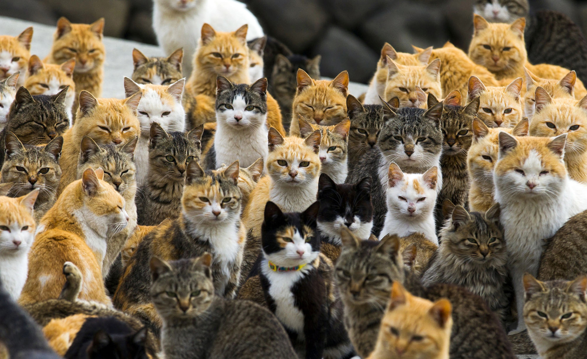
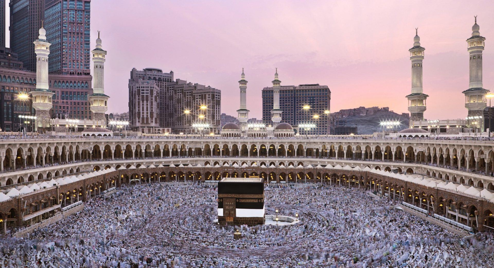

First place on my wishlist, because as a Muslim this place is obligatory for all Muslims who can afford it, one of my biggest dreams is to bring my parents here on my own efforts.

Aoshima is a small island famous for its large population of friendly stray cats. As a cat lover, it feels like a paradise where cats freely roam and interact with visitors. The peaceful island atmosphere and adorable cats make it a unique and relaxing destination.

New Zealand is known for its beautiful natural scenery, including mountains, lakes, and forests. It has a clean and peaceful environment, perfect for nature lovers.